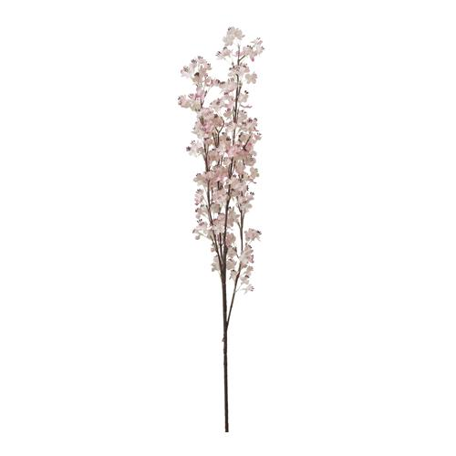

Flores
Las plantas y las ores son un elemento de decoración que no pasa de moda. Mantener los ambientes verdes y frescos es un imprescindible para cualquier época del año.

Las plantas y las ores son un elemento de decoración que no pasa de moda. Mantener los ambientes verdes y frescos es un imprescindible para cualquier época del año.